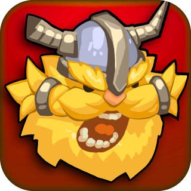
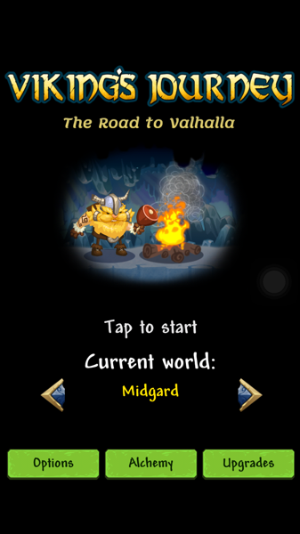
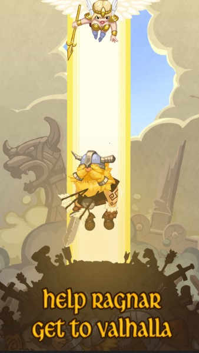
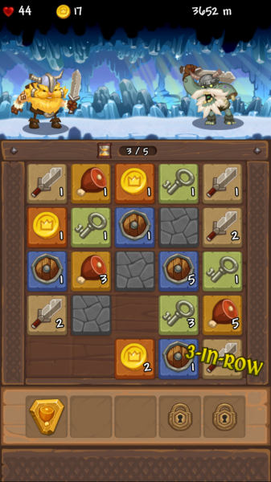

Viking's Journey:The Road to Valhalla

由一款游戏，发掘一个公司
一直都想做一款独立游戏，所以在玩游戏的同时，当发现这款游戏玩法简单，而又不失可玩性的时候就会特别留意。除了留意游戏之外，还会去查看开发人员的其它APP，顺藤摸瓜，希望能发现更多有意思的游戏 :)
在这个过程中，确实也发现很多公司的产品都有共同的特点，以后会慢慢写下我玩过并且留下印象的公司和产品 :)
最近在玩的这款「Viking’s Journey」和以前玩过的「dungelot」是一个公司出的。我就是通过查看开发人员其它APP来挖出来的。果不其然，这款游戏和「dungelot」一样具有非常高的可玩性，说会上瘾也不为过。



云风的博客中说：如果你对一款游戏有了深入的了解，你就会去想游戏背后的内在逻辑，是什么导致游戏粘住用户的。当把这些剥离出来，你就可以设计属于自己的东西了。
这款游戏好像就是这样积累起来的，它的玩法和「Threes」,「2048」一脉相承，都是通过上下左右的滑动来合并相同的元素，积累元素个数。在这个基础上又加入了RPG元素，玩家自己就是Ragnar，要到valhalla去，角色会自己向前走，遇到“物体”就会停下来，敌人会对Ragnar发动攻击，宝箱被打开则会赠送道具，绵羊被盾牌挡住就会载着Ragnar向前奔跑，如果没被抵挡住则会随机把网格中的方格变成不可滑动的石块，火堆可以把鸡腿消耗掉回复生命，这时玩家可以进行5次滑动（借助道具或者升级能获得更多次数），之后移除对应元素最多的方格来发动效果。随着路程越走越远，敌人的攻击会更高，开宝箱需要的钥匙会更多，抵挡绵羊需要的盾牌也会更多，所以必须尽量合并相同的元素，能在一个回合中发挥更大的作用。随着各种各样的消耗，最终Ragnar会死在路上，只是时间长短问题，这同样是一命到底的无尽模式，和「dungelot」类似，果然是一家公司开发的:)
在游戏过程中，我有个疑惑，就是这个游戏的数值是怎样控制的？
在旅程中，经常会有奄奄一息的时候，但是很多时候又能化险为夷，满满地格子又被合并到只剩个位数，或者很少的血量刚好碰到火堆，移除了积累上百的鸡腿，原地满血复活，或者被绵羊石化的方格被一个一个解开，每次滑出一片好局面时都会有快感。猜想这样的数值控制应该不仅仅是一个直白的公式，大概有一套规则？给局面评分，在局面不好的时候触发某种规则，能提供一些转机？还没有仔细去思考，但是给我直观的感受是往往山穷水尽疑无路，柳暗花明又一村！
哦，对了，这家公司是：Red Winter Software Limited
在搜索公司信息的时候，发现了一篇「Viking’s Journey」的游戏评论。评论说这款游戏很聪明的把「Threes」，RPG和无尽模式结合在一起。卡通的画风同时也不失细节。更加详细的介绍了玩法，同时列举了更多和「Viking’s Journey」玩法相关的游戏：Block Legend，Joinz，我后面再慢慢体验:)